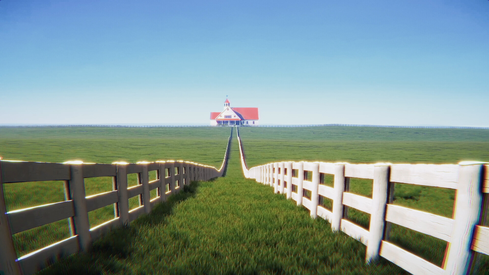
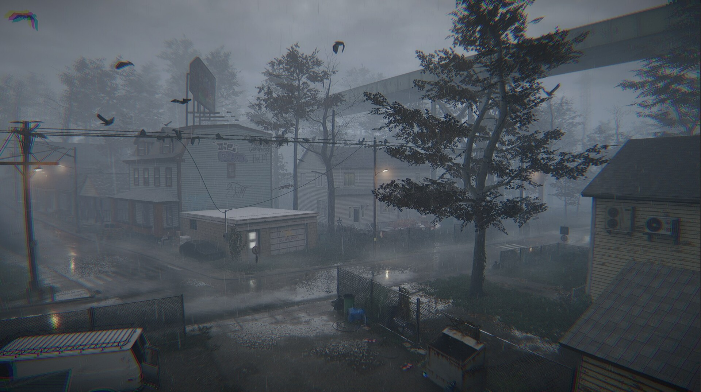
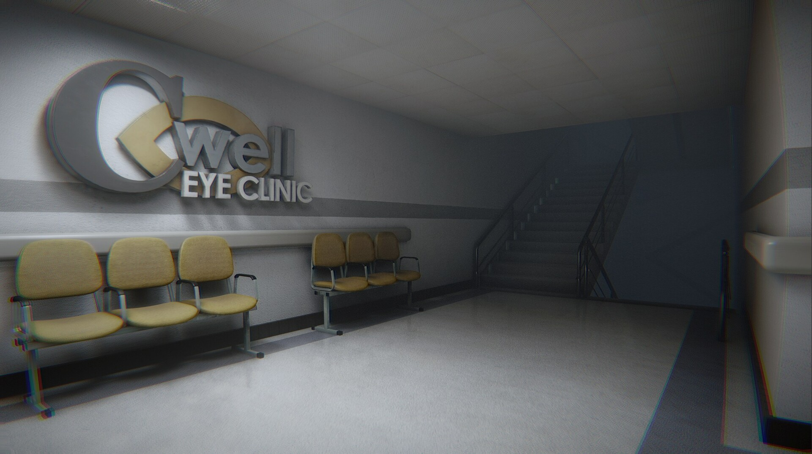

Farsight
What I did
I direct and lead development on Farsight, the debut game from Studio Noori. It is a liminal psychological horror game built around the one image everyone half-remembers from the eye exam: the little house on a hill you stare at through the autorefractor. A routine checkup pulls a twelve-year-old into it.
Farsight is built in Unity and I lead engineering on all of it, from the core gameplay to the environments, the encounters, and the systems that keep them in sync.
Press & Momentum
- Revealed during the Horror Game Awards 2026 Silver Tier showcase at the Midsummer Night's Scream broadcast.
- The IGN reveal segment passed 600,000 views, and GameSpot named Farsight among 15 standout games from the showcase.
- Covered in Japan by AUTOMATON, Denfaminicogamer, and 4Gamer.
- Featured by Rolling Stone India in RSI Recommends: 10 Indian Indie Games to Watch Out For.
- SlashFilm called out Farsight as a liminal horror game that could be the next Backrooms.
- A Korean fan clip crossed 1.4M views, and the game has passed 27,000 Steam wishlists.
Studio Background
Studio Noori is a small self-funded indie studio based in India. The team includes developers behind the Fears to Fathom series, the acclaimed PS1-style horror anthology. Farsight is the studio's debut original title, fully self-published with no publisher or external funding.
Links
Coverage
AUTOMATONDenfaminicogamer4GamerRolling Stone IndiaSlashFilmGematsuGameSpot



